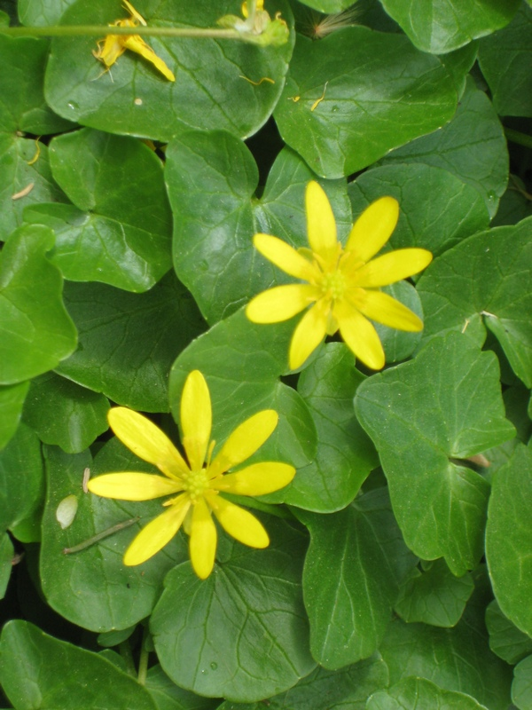
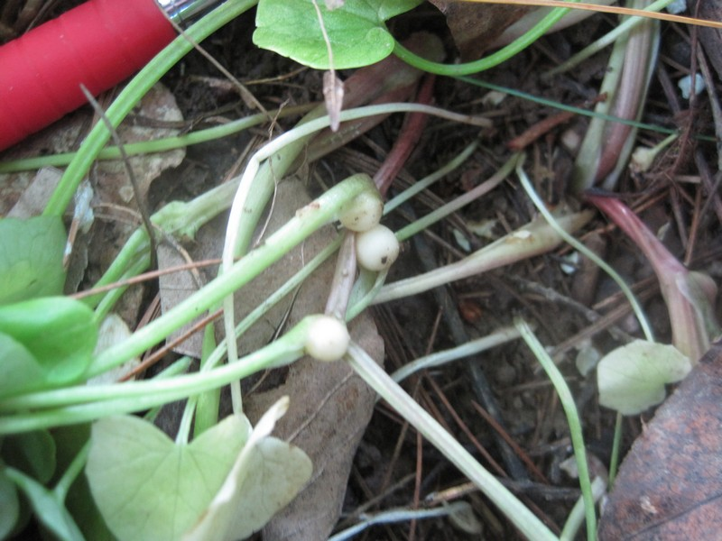
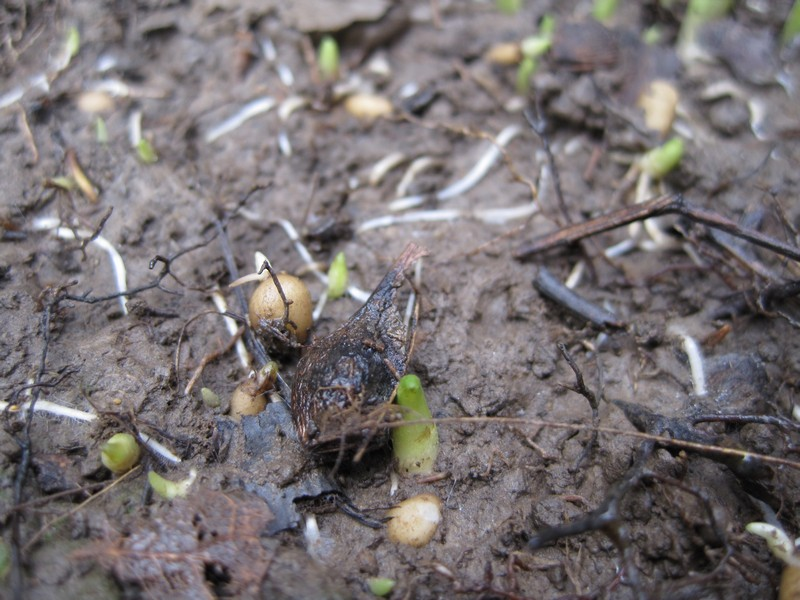
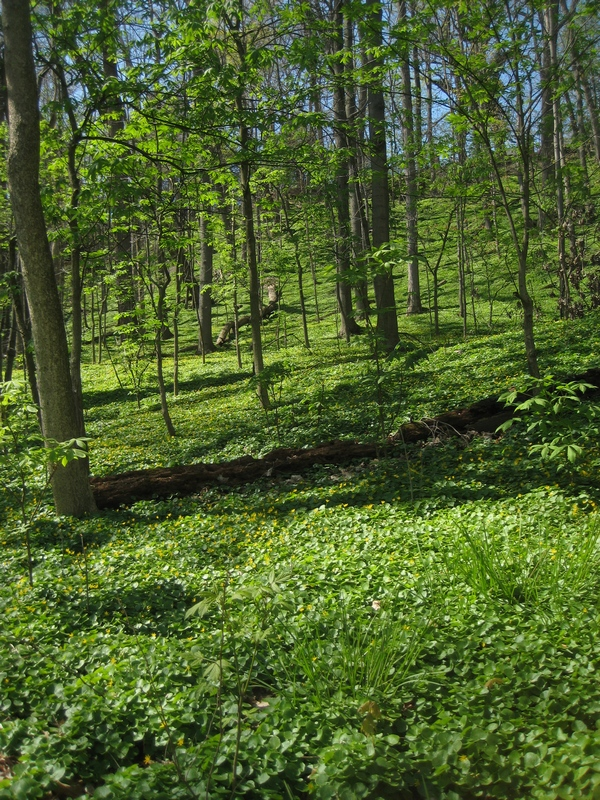
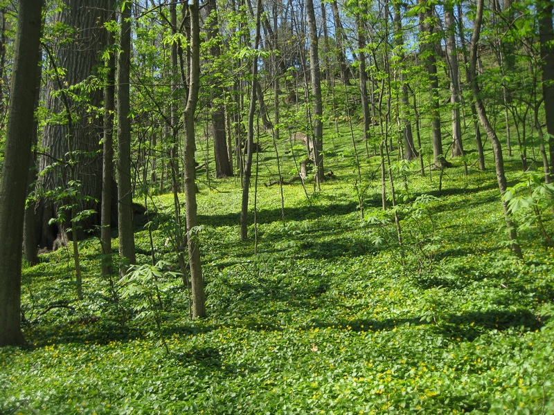

photo: Cleveland Metroparks
Lesser Celandine (Ranunculus ficaria)
Cleveland Metroparks |
Cleveland Metroparks |
Cleveland Metroparks |
Cleveland Metroparks |
Cleveland Metroparks |
{kind=link}
{kind=link}
{kind=link}
{kind=link}
{kind=link}
Form:
Herbaceous perennial, typically under 1 foot tall, spring ephemeral; prefers floodplains, can colonize upland sites.
Leaves:
Basal rosette, 1 to 2 inches long, kidney- to heart-shaped, dark green, bluntly toothed.
Flowers:
March to April, up to 3 inches wide, 8 to 12 glossy, butter-yellow petals.
Fruits & Seeds:
April to May, propagates primarily by bulbils on above-ground stems.
Roots:
Finger-like tubers, easily pulled up.
Similar Species:
Marsh Marigold (Caltha palustris)
Tier 1 - Early Detection/Rapid Response
These species are known to be highly invasive in natural areas, but are not yet widespread in Cleveland Metroparks. With Limited distrabution, immediate action will minimize management cost and long-term ecological impact of these aggressive species.
Action: A GPS point is taken and the Invasive Plant Coordinator should be notified, so the Invasive Plant Management Crew can respond accordingly.